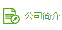

编号：20160417999110001
- 2016-03-10 18:07:15 中山三角处理中心 封发，发往广州市，处理人：xxx
- 2016-03-10 18:07:15 中山三角处理中心 封发，发往广州市，处理人：xxx
- 2016-03-10 18:07:15 中山三角处理中心 封发，发往广州市，处理人：xxx
- 2016-03-10 18:07:15 中山三角处理中心 封发，发往广州市，处理人：xxx
- 2016-03-10 18:07:15 中山三角处理中心 封发，发往广州市，处理人：xxx
- 2016-03-10 18:07:15 中山三角处理中心 封发，发往广州市，处理人：xxx
- 2016-03-10 18:07:15 中山三角处理中心 封发，发往广州市，处理人：xxx
溯源档案
卷心菜
品种
蔬菜
蔬菜
上市时间
2016-01-02
2016-01-02
季节
春季
春季
广州大学
负责人：苏苏苏
地址：广从打倒13号

上海蔬菜（集团）有限公司是由近50年历史的上海市蔬菜公司改制而成， 股东单位为上海大盛资产有限公司、上海市商业投资公司和江苏无锡朝阳 （集团）有限公司。集团公司以蔬菜及其他食用农产品批发为主， 是一家跨行业、跨地区、集工贸科研为一体、内外贸易相结合的大型国有控股企业， 也是上海蔬菜集团的核心企业。